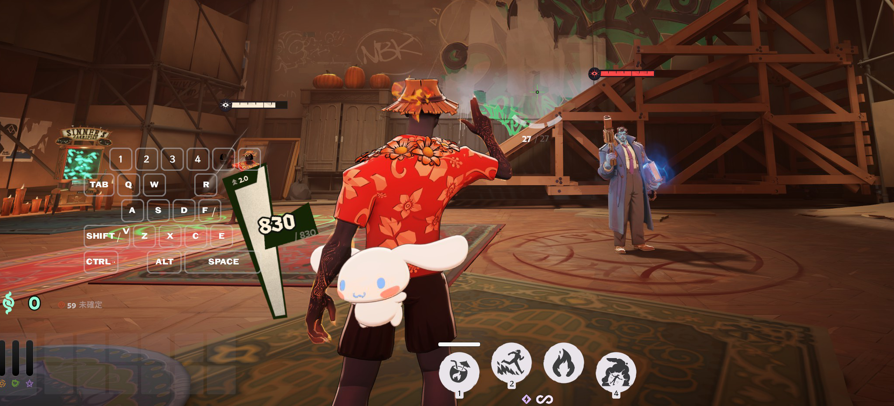
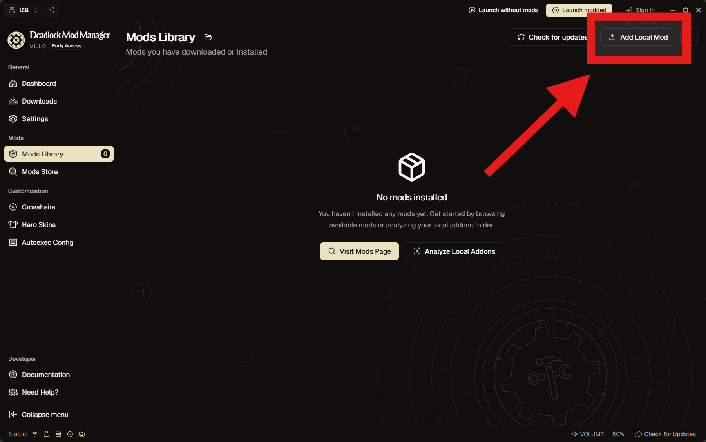
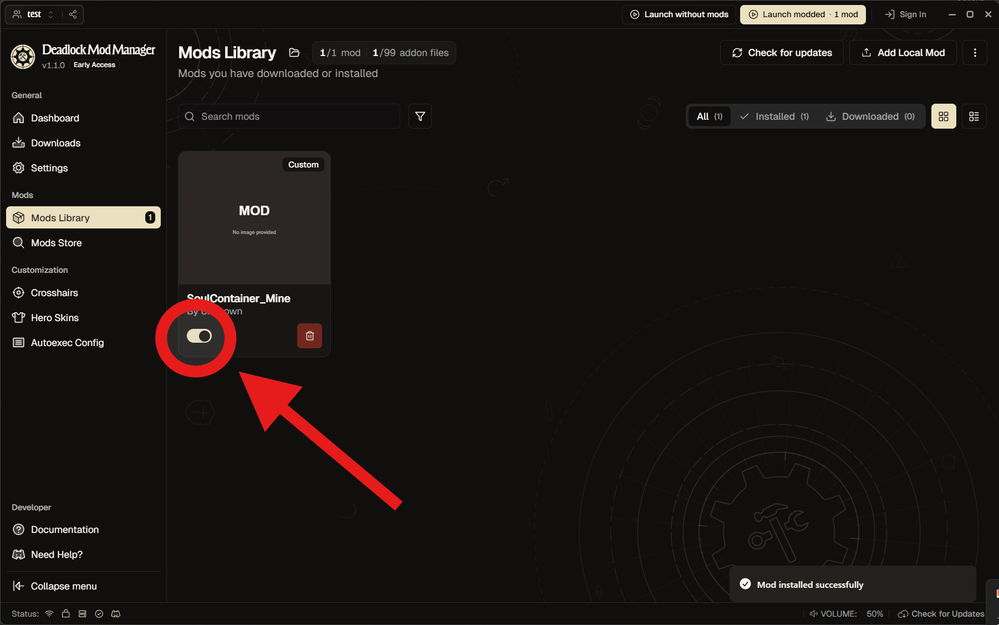

3Dモデルを、Deadlock のソウルコンテナ mod にするアドオン。

| Blender 4.2 以降 | 拡張機能に対応した版 |
| Reduced CSDK 12 | Deadlock のコンパイラ一式。配布ページの Google ドライブから |
| Steam | Deadlock 導入済み。起動してログインしたまま |
| Deadlock Mod Manager | できた mod を入れる（公式） |
Releases の zip を、 編集 → プリファレンス → アドオン → ▼ → Install from Disk でそのまま指定（展開しない）。 一覧に出たらチェックを入れる。
Reduced_CSDK_12 を選んで AcceptReduced_CSDK_12 ├─ game\ ← この2つが直接見えるフォルダ └─ content\
名前が二重（Reduced_CSDK_12\Reduced_CSDK_12\）のときは内側。
この設定は Blender に残る。.blend を変えても覚えている。
3Dビューで N キー →「Soul Container」タブ。
生成されたオブジェクトは SoulContainer コレクションにまとめられます。
再度実行しても作り直しは行われません。作り直す場合は、生成物を削除してから実行してください。
<mod 名>.vpk ができる。
パネルの「マテリアル（vmat）」から、ベースカラーなどの画像を指定。
Deadlock Mod Manager の Mods Library → Add local mod から vpk をアップロード。

ひとつ前の画面に戻って、有効化。

頂点が多すぎる。デシメートモディファイアーなどで減らす（適用は不要）。
プリファレンスの指定を確認。game\bin_cs2\win64\resourcecompiler.exe がある階層が正解。
Steam が起動しているか確認。直らなければ、出力先の compile.log に生のログが残っている。
中で何が走っているか。まるごとコピーして AI に貼ると、不具合や改造の相談がしやすい。
joint1 のアーマチュア・当たり判定の球を SoulContainer コレクションに配置joint1 にウェイト 100%本家のソウルコンテナ＝1 unit = 1 inch、半径 約 6.3 unit（直径 約 32cm）、ボーンは joint1 の1本、全頂点が joint1 に 100%、当たり判定は半径 7 の球。
global_scale=0.0254。Blender は 1 BU を 100cm で書き、Source 2 は cm を inch として読むため、指定しないと 39.37 倍になる.vmat を書き、.vmdl の remaps に1行ずつ。雛形は pbr.vfx の NPR 設定で、値だけ差し替えgame\bin_cs2\win64\resourcecompiler.exe でコンパイル*_c を集めて vpk に（向き修正のパーティクル3つも同梱）コンパイラはgame\bin_cs2\win64\のものだけ。bin\bin_tools\bin_server\はSchema mismatch: resourcecompiler.dll vs particles.dllで止まる。
.001 は拡張子として読まれる。マテリアルが外れて赤いワイヤーの玉になる。エクスポートの間だけ半角英数名に変更。Blender は名前の重複を自動で避けるので、同名を一時退避 → 仮名 → 本名 の順で付け替え、狙いどおりか確認してから書き出すCannot filter non-power-of-two texture 1200x1024x1!。vmat ごとコンパイルが落ち、警告は「メッシュがマテリアルを参照できない」＝原因から2段離れた内容になる。エクスポート時に近いサイズへリサイズ（Blender 内の画像は変更しない）obj.bound_box と matrix_world は依存グラフが追いつくまで古い。計測の前に view_layer.update()、大きさは頂点から直接測るソウルコンテナはモデルではなくパーティクルが描画している（particles/generic/holding_gold_neutral_model.vpcf）。モデルを差し替えただけでは向きに追従しない——元のパーティクルが C_OP_PositionLock の m_bLockRot で回転を固定しているため。
これを修正したパーティクル3つを同梱（手法は mod 657811 の作者からお借りした）。設定で外せる。ヨーのみの補正なので、しゃがみ移動では違和感が残る。
Valve のモデルやテクスチャは同梱していない。サイズガイドの球は実行時に生成している。